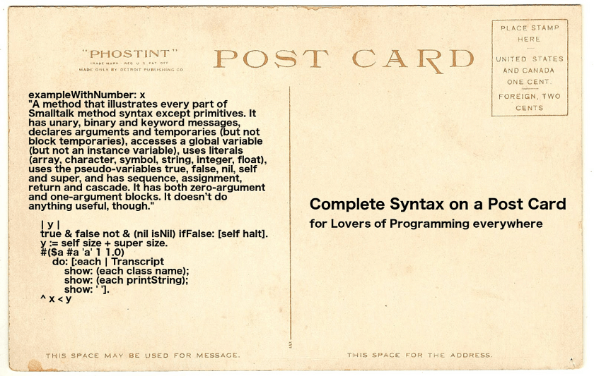
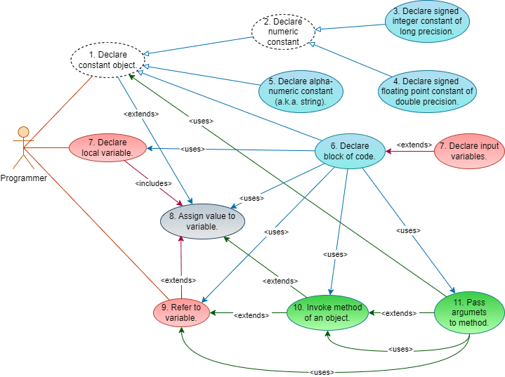
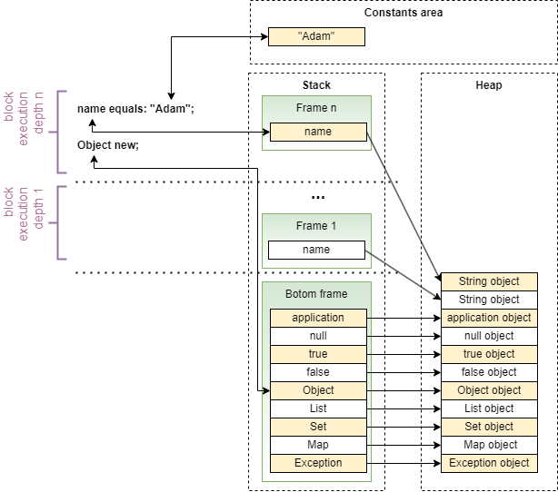

Smallscript - A Smalltalk-Inspired Scripting Language
The Tale of Two Cities
Some time ago, I got interested in a rather forgotten language named Smalltalk. While I never really programmed in it, I got seduced by its minimal syntax that fits a postcard.

Ever since I got bitten by that bug, I keep comparing other languages’ syntaxes and standard libraries to Smalltalk.
Recently, I got to actually learn Python 3. Python is advertised as a simple, readable and generally developer friendly language, yet I kept being astonished (or rather frustrated) with many of its quirks:
- whitespace used to denote execution structure;
- object-oriented, but with exceptions (
len("abc")instead of"abc".length()ordel(list[0])instead oflist.del(0)); - specialized keywords instead of method invocations
(
x in listinstead oflist.contains(x)); - cryptic interface contracts (
__str__()method instead oftoString()orstr()); - verbose functional-programming support (
lambda x: x*2instead of justx -> x*2); - odd list comprehensions syntax;
- and so on.
Every time I learned about the mentioned features, I asked myself "Why? There is a simpler way to do it. Couldn’t they just copy Smalltalk?". After learning Python, I got to the conclusion that it would be nice to have a really simple scripting language inspired by Smalltalk syntax, but without the entire Smalltalk walled-garden ecosystem. While there exists an image-less Smalltalk implementation named GNU Smalltalk, it seems discontinued. This way, an idea of Smallscript has been born. You may ask, why create another programming language when there are already hundreds of them. Well… because I can.
Great Expectations
Though I started with just a vague idea, my design goals quickly crystallized into the following set:
- Fully object-oriented (like Smalltalk) - everything is an object, even code;
- Class-less (like JavaScript) - objects are created by calling methods of factory objects (abstract factory pattern);
- Garbage-collected – obviously;
- Text-based (like Bash or Python, contrary to Smalltalk);
- Easy to parse - anything difficult to parse by hand-written top-down LL parser is out of scope;
- Easy to interpret - top-down, left-to-right (easy to implement using interpreter pattern).
- "Braced" – so it looks intuitive to most programmers (derivatives of C constitute the largest segment of language market share);
- Null-safe -
nullis a real object (like in Smalltalk), not an empty object reference value (null object pattern); - Without global variables – they aren’t actually needed for anything;
- Supporting functional programming (like Smalltalk or C#);
- Providing minimalistic syntax - no special keywords, no flow-control statements,
a handful of built-in types:
long,double,string,block,Object,List,Set,Map,Stream,null(like Smalltalk, but even more); - Enabling writing code in style resembling pidgin-English (like Smalltalk) – no mathematical notation, easy method chaining, arguments within method names, code and objects being equivalent (everything is executable);
There is also one non-goal which is performance (for now).
Little Smallscript
Smallscript allows only 9 operations depicted in Figure 2 (use cases 1 and 2 are abstract).

Basic Structure
A Smallscript program is interpreted as a block of code (anonymous function) with a predefined set of arguments (pre-existing local variables):
application- references an object denoting this application; exposes methods to obtain standards I/O streams, command line arguments, etc;null- references an empty object denoting no value, empty collection, empty stream, etc;true- references an object representing truth value;false- references an object representing falsity value;Object- references a factory of generic objects (obtained via "new" method);List- references a factory of ordered lists;Set- references a factory of sets;Map- references a factory of maps;Exception- references a factory of exception objects;
A program is a set of sentences where words denoting variables, constants or (partial) methods names, are separated with whitespace. Each sentence is terminated with semicolon. For example:
true and: false;
first references variable true, and then invokes
true's method "and:" passing an argument;referenced by
false to it.
Sentences are executed from top to bottom and from right to left. In the following example:
1 equals: 1;
true and: false equals: false;
the upper sentence gets executed first and the lower sentence second. In the second;sentence:
true and: false
will be executed first and the result will be input to other two tokens.
<result> equals: false;
To change the order of execution, parentheses shall be used. For example:
true and: (false equals: false);
Constants and Variables
There are four types of constants in Smallscript:
- integers - e.g.,
1, 2, 3; - floating point numbers - e.g.,
1.1, 2.4; - strings - e.g., "
abc"; - blocks (anonymous functions) - e.g.,
{};
Variables are always allocated on stack within current block's frame.
Declaring a new variable requires prepending its name with '!' character,
otherwise Smallscript
assumes an existing variable. Variables cannot exist without values being
assigned to them. To assign value to a variable, the '='
character is used. For example, execution of the following program:
!var1 = "abc";
!var2 = "def";
var2 = var1;
var1 = "xyz";
will create two variables with var1 referencing the value
of "xyz" and var2 referencing the value
of "abc". Variables can also hold references to blocks:
!function = {};
All types in Smallscript are reference types. Variable names are case sensitive.
Blocks
Blocks are anonymous functions performing computations. Blocks always return
a value. The value is the result of execution of the last sentence in a block
(there is no "return" keyword). For example, execution of the block:
{
!v1 = "abc";
!v2 = "def";
v1 equals: v2;
};
returns false; Executing empty block:
{
};
returns null.
Blocks can accept any number of input arguments terminated with '|':
{ !v1 !v2 |
v1 equals: v2;
};
Blocks are objects. In order to execute block without arguments, an
"execute" method needs to be called. For example, the following program:
!empty = {};
empty execute;
returns null. Executing block with arguments requires calling
"executeWith:" method. For example, executing the program:
!function = { !v1 !v2 |
v1 equals: v2;
};
function executeWith: "abc" :and: "def";
returns false. "executeWith:" method can take any
number for arguments separated by ":and:" clauses. Blocks ignore
the extra arguments. For example, the program:
!function = { !v1 !v2 |
v1 equals: v2;
};
function executeWith: "abc" :and: "def" :and: "xyz";
still works properly since the value "xyz" gets ignored.
Every Smallscript object
can be executed. Unless an object explicitly overrides "execute" method,
executing it simply returns this object. For example:
"abc" executeWith: "xyz";
does nothing and returns "abc".
Closures
Each block is a closure, if it references variables not defined within its scope. For example, the following program:
{
!var = "abc";
{
var;
};
} execute execute;
returns "abc", since the execution of outer block returns the
inner block enclosing var variable and the execution of inner block
returns the value referenced by var.
Objects and Methods
Objects are the only data structures available in Smallscript. New objects are created by calling methods of other objects. The following snippet shows examples of object creation:
!myGenericObject = Object new;
!myList = List new;
!mySet = Set new;
!myMap = Map new;
By convention, names of variables referencing factory objects start with upper case.
Objects are class-less. The only way to add methods to objects is to call
"addMethod::using:" method on them and pass new method name and a
block as parameters. For example, the following program:
!obj = Object new;
obj addMethod: "sayHelloTo:" :using: { !this !name |
"Hello " append: name append: "!";
};
obj sayHelloTo: "Mike";
returns "Hello Mike!". Blocks are unaware of object affiliation,
that's why it is necessary to explicitly declare !this as the first
argument of a block assigned as method to an object (just like in Python).
The name !this is only a convention, it can be anything.
In order to add a field to an object, the "addField:" method
needs to be called. For example, the following program:
!obj = Object new;
obj addField: "name";
obj name: "Mike";
obj name;
adds new field named "name" to a generic object with initial
value of null. Then it writes and reads the value of this field
returning "Mike". Smallscript
does not allow direct access to object fields. Every time a field is added to an
object, Smallscript generates
methods to read and write the field value. Like in Smalltalk and Python, all
fields and methods of an objects are public. By convention,
the names of "private" fields and methods shall start with
'$' character and "protected" with '^'
(for example, $myPrivateField or ^myProtectedMethod).
Creation of specific objects shall be enclosed in methods of factory objects as shown in appendix A.
More on Methods
Method names in Smallscript can consist of any characters, but a colon character has a special meaning. Similarly to Smalltalk, Smallscript allows putting argument values "within" methods names to improve readability. Colons in method names denote places where such insertion is possible. The rules are as follows:
- method name MUST NOT start with colon;
- method name without arguments MUST NOT contain colon;
- method name with one or more arguments MAY end with colon;
- method name with two or more arguments MUST contain two consecutive colons;
- method name MUST NOT contain three or more consecutive colons;
!thisargument is passed implicitly and DOES NOT require colons.
The following examples present valid method names along with possible invocations:
| Method name | Example Invocation |
size | car size; |
name: | car name: "Toyota"; |
maxSpeed::kph | car maxSpeed: 200 :kph; |
addMethod::using: | car addMethod: "color" :using: { "red";}; |
Please notice that method arguments are always placed between inner colons (separated with whitespace) and after ending colon (separated with whitespace). The following list presents invalid names:
::nameabc:::def
It is important to keep colons right when invoking methods in order not to confuse parser where the methods' names begin and end.
Arithmetics
Smallscript does NOT provide arithmetic operators. Instead objects of "type"
long and double provide methods named plus:,
minus:, dividedBy: etc. The rationale is that arithmetic
operations are rarely used when scripting and special treatment of arithmetic
operators (+,-,/,*...) would complicate the parser and break the strict
left-to-right evaluation principle.
Flow Control
Just like Smalltalk, Smallscript does not define any flow control keywords (actually, Smallscript does not define any keywords at all). Since every value is an object, flow control is achieved by invoking methods of objects with blocks as arguments. The following snippets provide example of common flow control constructs in Smallscript.
Conditional flow control (if statement):
2 isLessThan: 3 ifTrue: { application output writeLine: "true"}
:ifFalse: { application output writeLine: "false"};
The method "isLessThan:" returns either true or
false object depending on comparison outcome. Both true
and false objects provide "ifTrue::ifFalse:" method.
In case of true object, the method invokes the "execute"
method of the first argument (block in this case) returning its
return value. In case of false object, the methods invokes the "execute
method of the second argument (block in this case) returning its return value.
Ternary operator (?):
application output writeLine: (2 isLessThan: 3 ifTrue: "true" :ifFalse: "false");
Since all objects are executable, ternary operator's functionality is achieved by the same means as above.
Conditional iteration (while loop):
!counter = 0;
{counter isLessThan: 10} whileTrue: {
application output writeLine: counter;
counter = counter plus: 1;
};
The "whileTrue:" methods executes its own block
({counter isLessThan: 10}) in a loop until it returns false.
Every time it returns true, the method executes its argument.
The return value of "whileTrue:" method is the last value returned
by argument's execute method or null, if the argument
has never been executed.
N-ary iteration (for loop):
1 to: 3 forEach: { !number | application output writeLine: number };
3 times: { application output writeLine: "Hello" };
Exceptions (throw, try, catch):
!o = Object new;
o try: {
o throw;
} :catch: {!e |
e equals: o;
};
Every object can be thrown as an exception using its "throw" method.
The "throw" method never returns. Every object provides a "try::catch:" method.
The method executes the first argument. If the execution of the first argument
ends up with exception, the method executes its second argument giving it the
exception object. Every object provides a "nature" method.
The return value of this method can be used to differentiate exception "types".
null
Smallscript is a null-safe language. "null" is not a special
illegal reference value but a variable holding reference to a special object
that acts like empty value (empty optional, empty list, empty set, empty map, etc.).
Besides a few defined methods (asString, equals:,
hash, isNotEqualTo:, orDefault:,
nature and size), calling any method on this object
is a no-op returning null. The following program shows valid
usage of null:
!result = null selectIf: {!item | item startsWith: "x"}
transformUsing: {!item | item size }
collectTo: List;
result equals: null;
and returns true.
Memory Model
Smallscript provides three memory areas available to programmer (see Figure 3):
- Constants area - contains the whole object-executable code of a program; along with values of all constants defined in it; it is not garbage-collected;
- Heap - contains values of all objects created during program execution
(e.g., by invoking
Object new; List new;etc.); it is garbage-collected; - Stack - holds references to all variables created during program execution; each block invocation creates a new frame (block of memory) containing local variables created by this block; block's frame gets disposed after the block finishes execution.

Smallscript does not provide global variables. All variable references are
placed on Stack. In order to read or write a variable,
Smallscript interpreter
searches for particular reference in the current Stack frame.
If the variable name is found in current frame, it is read or written,
otherwise the interpreter moves one frame down the stack and looks for variable again.
The process continues until the variable is found or bottom of the stack has been reached,
in which case the interpreter exits with error. This behavior allows using
predefined set of variables existing at the bottom of stack as if they were
global (e.g., Object), as well as overshadowing already existing
variables with block-local ones (e.g., name).
Additionally, it allows easy implementation of closures.
Battle of Life
The initial version of Smallscript interpreter (click here to download) has been written in Java 17 (C++ implementation is in progress). The reason of this was that I was able to reuse a little JSON parser code I wrote years ago, and leverage Java’s garbage collector. The command to start interactive mode is:
java -jar smallscript.jar
In order to execute a script, just pass its name as an argument using:
java -jar smallscript.jar myscript.ss
Smallscript does no t have any documentation yet, so please refer to the source code for details.
Appendix A - Hard Times
The following snippet shows the built-in implementation of a very simple unit testing framework provided by Smallscript:
#-------------------------------------------------------------------------------
#Copyright 2023 Lukasz Bownik
#
#Licensed under the Apache License, Version 2.0 (the "License");
#you may not use this file except in compliance with the License.
#You may obtain a copy of the License at
#
# http://www.apache.org/licenses/LICENSE-2.0
#
#Unless required by applicable law or agreed to in writing, software
#distributed under the License is distributed on an "AS IS" BASIS,
#WITHOUT WARRANTIES OR CONDITIONS OF ANY KIND, either express or implied.
#See the License for the specific language governing permissions and
#limitations under the License.
#-------------------------------------------------------------------------------
#-------------------------------------------------------------------------------
# TestCase
#-------------------------------------------------------------------------------
!TestCase = Object new addMethod: "asString" :using: "TestCase";
#-------------------------------------------------------------------------------
TestCase addMethod: "named::using:" :using: {!this !name !block |
!case = Object new
addField: "result"
addField: "name" :withValue: name
addField: "block" :withValue: block;
#----------------------------------------------------------------------------
case addMethod: "run" :using: {!this |
this try: {
this block execute;
this result: "Passed";
} :catch: { !e |
this result: ("Failed: " append: (e message));
};
};
};
#-------------------------------------------------------------------------------
# TestSuite
#-------------------------------------------------------------------------------
!TestSuite = Object new addMethod: "asString" :using: "TestSuite";
#-------------------------------------------------------------------------------
TestSuite addMethod: "new" :using: {
!suite = Object new
addImmutableField: "tests" :withValue: (List new);
#----------------------------------------------------------------------------
suite addMethod: "addTestNamed::using:" :using: {!this !name !block |
this tests add: (TestCase named: name :using: block);
this;
};
#---------------------------------------------------------------------------
suite addMethod: "$createAssert" :using: {!this |
Object new addMethod: "that::equals:" :using: {!this !expected !actual |
expected equals: actual ifFalse: {
Object new addField: "nature" :withValue: "assertionFailure"
addField: "cause" :withValue: this
addField: "message" :withValue:
("Expected: " append: (expected asString)
append: " but was: "
append: (actual asString))
throw;
};
};
};
#---------------------------------------------------------------------------
suite addMethod: "$createFail" :using: {!this |
Object new addMethod: "with:" :using: {!this !message |
Object new addField: "nature" :withValue: "assertionFailure"
addField: "cause" :withValue: this
addField: "message" :withValue: message
throw;
};
};
#---------------------------------------------------------------------------
suite addMethod: "run" :using: {!this |
!assert = this $createAssert;
!fail = this $createFail;
this tests forEach: {!test | test run };
this;
};
#---------------------------------------------------------------------------
suite addMethod: "printResultsTo:" :using: {!this !output |
output append: "====== Results =======\n";
this tests forEach: { !test | output append: (test name) append: " - "
append: (test result) append: "\n"; } ;
this;
};
};
#-------------------------------------------------------------------------------
# ModuleObject - value returned by this script
#-------------------------------------------------------------------------------
Object new addField: "Suite" :withValue: TestSuite;
The above script can be loaded and used in the following way:
!SUnit = application load: "SUnit.ss";
!suite = SUnit Suite new;
suite addTestNamed: "test1" :using: {
assert that: 10 :equals: 10;
};
suite addTestNamed: "test2" :using: {
fail with: "abc";
};
suite run printResultsTo: (application output);